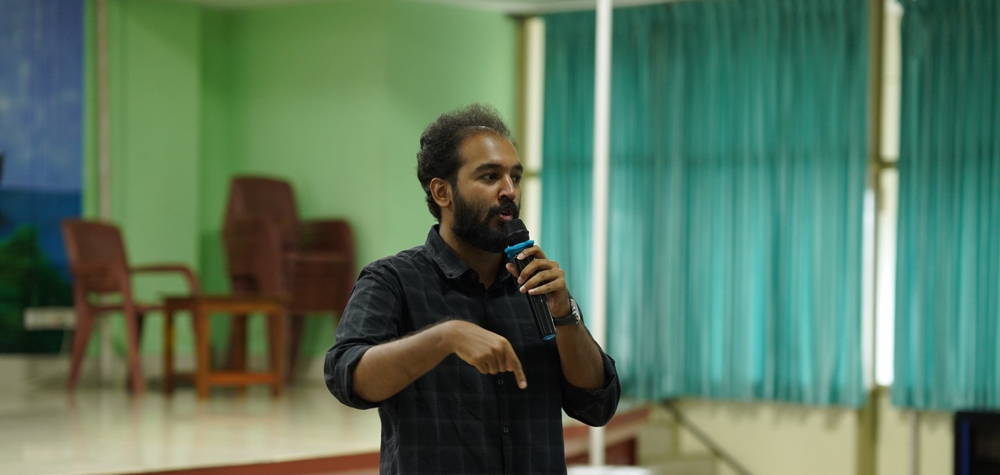

A series by Dr. Sidharth NarayananArticle 001 is out

MedX Talks · 25 Oct 2026IMA MSN All Kerala · GMC Kozhikode
Before I leave medical college.
MBBS is the foundation of every doctor’s career. Right now, it feels undervalued.
Article 001 · Scan to read
Medical College Is More Than a Training Ground for Doctors
medinn.in/bilmc/more-than-a-training-ground